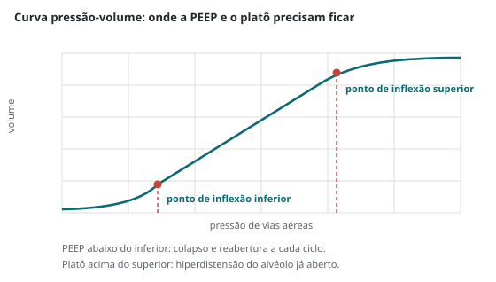

Emergências e terapia intensiva · 70 min · Definição global 2024 e ATS 2024 · monografia
SDRA: a definição global de 2024 e o tratamento que muda desfecho
Berlim exigia intubação, gasometria arterial e tomógrafo. A definição global de 2024 aceita cateter nasal de alto fluxo, oximetria de pulso e ultrassom — e, onde faltam recursos, dispensa até a PEEP. Do lado do tratamento, a lista do que reduz mortalidade continua curta e teimosa: volume corrente baixo pelo peso predito, platô limitado, prona nas formas graves. Este texto junta as duas metades: como fazer o diagnóstico pelo consenso de 2024 e o que fazer com ele, com a força de recomendação transcrita da diretriz.
1. Por que Berlim precisou ser expandida
A definição de Berlim, de 2012, exigia ventilação com PEEP de pelo menos 5 cmH₂O — o que, na prática, exigia intubação ou ventilação não invasiva. Na década seguinte, três coisas mudaram. O cateter nasal de alto fluxo passou a tratar insuficiência respiratória hipoxêmica grave sem intubar, e a pandemia tornou o uso corriqueiro: num estudo, 93% dos pacientes com COVID-19 tratados com alto fluxo continuaram preenchendo os critérios de oxigenação de SDRA depois de intubados. A oximetria de pulso substituiu a gasometria em boa parte do mundo. E o ultrassom pulmonar tornou-se disponível onde não há tomógrafo nem, às vezes, radiografia.
O problema que a expansão resolveO paciente em alto fluxo, com opacidades bilaterais e hipoxemia grave, tinha a síndrome — mas não podia receber o diagnóstico por não estar em ventilação com pressão positiva. E em regiões de poucos recursos, exigir gasometria e tomografia apagava a doença das estatísticas. O comitê foi explícito: a possibilidade de preencher critérios de uma síndrome não deve depender de limitação de recursos. Incluir o alto fluxo permite ainda reconhecer a SDRA mais cedo e viabiliza ensaios de intervenções precoces.
De onde vem cada coisa neste textoO diagnóstico vem do consenso global ESICM/ATS/SCCM publicado em 2024 no American Journal of Respiratory and Critical Care Medicine — um documento de consenso por supermaioria, não uma diretriz com GRADE. O tratamento vem da atualização da diretriz oficial da American Thoracic Society de 2024, que gradua por GRADE em recomendação forte ou condicional, com certeza da evidência. Onde este texto diz "forte" ou "condicional", é dessa diretriz. Ventilação mecânica geral — modos, ajuste inicial, assincronias, desmame — está na leitura de ventilação mecânica; choque e monitorização hemodinâmica, na de choque circulatório.
2. A definição global de 2024
O modelo conceitual permanece o de Berlim: lesão pulmonar aguda, difusa e inflamatória, precipitada por um fator de risco — pneumonia, infecção não pulmonar, trauma, transfusão, queimadura, aspiração ou choque —, que aumenta a permeabilidade vascular e epitelial, gera edema e atelectasia dependente da gravidade, e com isso perda de tecido aerado. As marcas clínicas são hipoxemia arterial e opacidades difusas, com aumento de shunt e de espaço morto alveolar e queda da complacência. O dano alveolar difuso é o achado histológico clássico, mas varia e não é necessário para o diagnóstico clínico.
Definição global de SDRA — 2024 (ESICM/ATS/SCCM)
Critérios que valem para todas as categorias
Fator de risco e origem do edema
Fator de risco agudo — pneumonia, infecção não pulmonar, trauma, transfusão, aspiração, choque. O edema não é exclusiva ou primariamente atribuível a causa cardiogênica ou sobrecarga hídrica, nem a hipoxemia a atelectasia.
Tempo
Início ou piora da insuficiência respiratória hipoxêmica dentro de 1 semana do início estimado do fator de risco ou de sintomas respiratórios novos ou em piora.
Imagem
Opacidades bilaterais na radiografia ou tomografia, ou linhas B bilaterais e/ou consolidações ao ultrassom, não completamente explicadas por derrame, atelectasia ou nódulos.
Critérios por categoria
SDRA não intubada
SDRA intubada
Ambiente de poucos recursos
Oxigenação
PaO₂/FiO₂ < 300 mmHg ou SpO₂/FiO₂ < 315 com SpO₂ abaixo de 97%, em alto fluxo acima de 30 L/min ou em VNI/CPAP com pelo menos 5 cmH₂O
Gradação em leve, moderada e grave (quadro adiante), com PEEP mínima de 5 cmH₂O em todas as faixas
SpO₂/FiO₂ < 315 com SpO₂ abaixo de 97%. Não se exige PEEP, fluxo mínimo nem dispositivo específico
As quatro recomendações do consenso, na ordem em que ele as apresenta1) Incluir o cateter nasal de alto fluxo com fluxo mínimo acima de 30 L/min. 2) Usar PaO₂/FiO₂ < 300 mmHg ou SpO₂/FiO₂ < 315 — esta última só com SpO₂ abaixo de 97% — para identificar a hipoxemia. 3) Manter as opacidades bilaterais como critério de imagem, mas acrescentar o ultrassom, especialmente onde há poucos recursos. 4) Em ambientes de poucos recursos, não exigir PEEP, fluxo de oxigênio nem dispositivo específico.
Há regras de medida que a prova cobra. Gasometria e oximetria devem ser colhidas com o paciente em repouso e ao menos 30 minutos depois de mudança de posição, de FiO₂ ou de fluxo. Na SDRA não intubada, a FiO₂ estimada é 0,21 + 0,03 × fluxo em L/min. A razão SpO₂/FiO₂ não vale acima de 97% de saturação, nem quando se suspeita de metemoglobinemia ou carboxi-hemoglobinemia. Acima de 1000 metros, multiplicar a razão pela pressão barométrica dividida por 760.
Por que 315, e por que só abaixo de 97%O corte de 315 foi calibrado pela equação linear de Rice para corresponder à PaO₂/FiO₂ de 300 — o limiar de Berlim. A restrição de usar só abaixo de 97% existe porque, na parte plana da curva de dissociação, saturações de 97% a 100% correspondem a uma faixa enorme e imprecisa de PaO₂. E há uma limitação que o comitê assume: o oxímetro pode não detectar hipoxemia em pele mais escura e em choque, o que preocupa porque muitos pacientes com SDRA têm má perfusão. Ele julgou que a disponibilidade universal compensa, e recomendou gasometria quando a incerteza puder mudar diagnóstico ou conduta.
3. Gravidade e as três categorias
Gravidade na SDRA intubada
PaO₂/FiO₂ (mmHg)
SpO₂/FiO₂ correspondente
Leve
200 < PaO₂/FiO₂ ≤ 300
235 < SpO₂/FiO₂ < 315
Moderada
100 < PaO₂/FiO₂ ≤ 200
148 < SpO₂/FiO₂ < 235
Grave
PaO₂/FiO₂ < 100
SpO₂/FiO₂ < 148
Em todas as faixas de SDRA intubada exige-se PEEP mínima de 5 cmH₂O; a correspondência em SpO₂/FiO₂ só vale com SpO₂ abaixo de 97%. O paciente pode migrar de uma faixa para outra ao longo da doença.
As três categorias — não intubada, intubada e ambiente de poucos recursos — não são graus de gravidade, e sim contextos de suporte. A gradação leve, moderada e grave é descrita para a SDRA intubada: o comitê não achou razão para mudar as faixas de Berlim, apenas para permitir que os valores correspondentes de SpO₂/FiO₂ preencham o critério de hipoxemia. A categoria de poucos recursos incorpora formalmente a modificação de Kigali, proposta em 2016 e até então nunca absorvida.
Por que isso importa para ler ensaio clínicoVários ensaios enriqueceram a população exigindo PaO₂/FiO₂ abaixo de 150 na inclusão — corte que não existe em Berlim nem na definição global. É o caso dos ensaios de prona e de bloqueio neuromuscular. Quando a diretriz diz "SDRA grave", vale conferir qual foi o critério de entrada do ensaio que a sustenta.
4. O que precisa ser excluído — e o que pode coexistir
O edema pulmonar e a insuficiência respiratória não podem ser exclusiva ou primariamente atribuíveis a: edema pulmonar cardiogênico, sobrecarga hídrica, atelectasia ou colapso pulmonar, derrame pleural ou embolia pulmonar. A palavra que carrega o peso é primariamente.
Coexistência é permitida — e é a regraO consenso é explícito: a síndrome pode ser diagnosticada na presença dessas condições, desde que exista um fator de risco predisponente e o clínico julgue que elas não explicam sozinhas a hipoxemia. O mesmo vale para doença pulmonar crônica — doença pulmonar obstrutiva crônica, doença intersticial, hipertensão pulmonar —, contanto que a insuficiência respiratória aguda não seja primariamente atribuível a elas. Insuficiência cardíaca não é passe livre para deixar de diagnosticar: os dois quadros coexistem com frequência, e quem trata só o edema cardiogênico deixa de aplicar a ventilação protetora que muda desfecho.
O tempo de uma semana foi mantido apesar da discussão sobre quadros mais indolentes como o da COVID-19: a lógica do comitê foi que incluir o alto fluxo já permite o diagnóstico mais precoce, tornando desnecessário alargar a janela.
Fluxograma 1Aplicar a definição global de 2024 à beira do leito
flowchart TD
A["Insuficiência respiratória hipoxêmica aguda"] --> B{"Início ou piora dentro de 1 semana de fator de risco ou de sintoma novo?"}
B -->|"não"| Z["Não é SDRA · buscar outra causa"]
B -->|"sim"| C{"Imagem bilateral? opacidades na radiografia ou TC ou linhas B e consolidações ao ultrassom"}
C -->|"não"| Z
C -->|"sim · não explicada só por derrame, atelectasia ou nódulos"| D{"Edema explicado PRIMARIAMENTE por causa cardiogênica sobrecarga hídrica ou atelectasia?"}
D -->|"sim"| Z
D -->|"não · pode coexistir se há fator de risco"| E{"Qual o suporte respiratório?"}
E -->|"alto fluxo acima de 30 L/min ou VNI/CPAP com PEEP ≥ 5"| F["SDRA NÃO INTUBADA PaO2/FiO2 abaixo de 300 ou SpO2/FiO2 abaixo de 315 com SpO2 abaixo de 97%"]
E -->|"ventilação invasiva com PEEP ≥ 5"| G["SDRA INTUBADA leve · moderada · grave pela razão de oxigenação"]
E -->|"sem alto fluxo, sem ventilador ou sem gasometria"| H["SDRA EM AMBIENTE DE POUCOS RECURSOS SpO2/FiO2 abaixo de 315 · sem exigir PEEP nem fluxo mínimo"]
5. Fenótipos hiper e hipoinflamatório
A SDRA é uma síndrome, não uma doença — e essa é a explicação mais aceita para a fila de ensaios neutros. A análise de classes latentes aplicada a coortes de ensaios randomizados identificou de forma reprodutível dois subfenótipos biológicos, e eles se comportam de maneira diferente.
HiperinflamatórioCerca de um terço dos pacientes. Concentrações plasmáticas mais altas de citocinas inflamatórias — interleucina 6, interleucina 8, receptor 1 do fator de necrose tumoral —, maior prevalência de sepse e de uso de vasopressor, bicarbonato mais baixo e proteína C mais baixa. Mortalidade em torno de 45%.
HipoinflamatórioOs dois terços restantes. Marcadores inflamatórios menos elevados, menos choque, mais frequentemente associado a causas não sépticas. Mortalidade em torno de 20%.
A importância prática ainda é mais conceitual que operacional: reanálises sugerem resposta diferente a estratégia de PEEP, manejo de fluidos e corticoide, com o mesmo tratamento parecendo benéfico em um fenótipo e neutro no outro. Nada disso está validado para a beira do leito, e o consenso de 2024 lista, entre as prioridades de pesquisa, relacionar os subfenótipos às categorias da nova definição. O que fica é o raciocínio: quando um ensaio grande de SDRA dá neutro, a primeira hipótese não é que a intervenção não funciona — é que ela funciona num subgrupo que o ensaio diluiu.
6. Volume corrente e peso predito
Recomendação
Força
Certeza
Usar estratégia ventilatória que limite o volume corrente a 4 a 8 mL/kg de peso predito e as pressões inspiratórias, com pressão de platô abaixo de 30 cmH₂O
forte
moderada
É a intervenção com a melhor evidência em SDRA e a única com recomendação forte no ajuste ventilatório básico. O erro nasce na aritmética e é silencioso: o peso predito não é o peso do paciente. Ele depende só de altura e sexo, porque o volume pulmonar depende de altura e sexo — o pulmão não engorda. Usar o peso real num obeso entrega volumes 40% a 60% acima do alvo, e entrega isso a quem já tem pulmão vulnerável.
Figura 1. À esquerda, a conta que decide o volume corrente: peso predito por altura e sexo, e 6 mL/kg desse peso. À direita, por que platô e PEEP não bastam sozinhos — a mesma pressão de platô de 25 cmH₂O significa distensão de 15 cmH₂O com PEEP de 10, e de 20 cmH₂O com PEEP de 5.
Questão-âncoraMulher de 1,58 m e 96 kg, SDRA moderada por pneumonia. A prescrição do plantão anterior está em volume corrente de 560 mL. O que fazer?LeituraPeso predito = 45,5 + 0,91 × (158 − 152,4) = 45,5 + 5,1 ≈ 50,6 kg. A 6 mL/kg, o volume corrente é de cerca de 300 mL — a prescrição está quase no dobro, porque foi calculada pelo peso real. Corrigir o volume, medir platô e pressão de distensão com pausa inspiratória, e aceitar hipercapnia permissiva enquanto o pH se mantiver acima de 7,20.
7. Platô, PEEP, pressão de distensão e pressão transpulmonar
A pressão de platô, medida em pausa inspiratória, reflete a pressão alveolar ao fim da insuflação, e o alvo formal é abaixo de 30 cmH₂O. A pressão de distensão é a diferença entre platô e PEEP, e equivale ao volume corrente dividido pela complacência — o volume corrigido pelo tamanho do pulmão que ainda ventila. Na análise de mediação de Amato, foi a variável que melhor se associou à sobrevida: reduzir volume corrente ou subir PEEP só trouxe benefício quando reduziu a pressão de distensão. O alvo prático mais usado é abaixo de 15 cmH₂O, mas ele vem de análise observacional — a recomendação forte da ATS de 2024 continua formulada em torno de volume corrente e platô.

Figura 2. A curva pressão-volume explica os dois alvos ao mesmo tempo. Abaixo do ponto de inflexão inferior, o alvéolo colapsa e reabre a cada ciclo — o atelectrauma, que a PEEP adequada previne. Acima do ponto de inflexão superior, o alvéolo já aberto se hiperdistende — o volutrauma, que o volume corrente baixo e o platô limitado previnem.
A pressão transpulmonar é a que realmente distende o parênquima: pressão de vias aéreas menos pressão pleural, esta estimada pela pressão esofágica com balão. A ideia é elegante — no obeso, na ascite e no abdome hipertenso, boa parte do platô é gasta contra a parede torácica e não contra o pulmão, de modo que um platô de 32 cmH₂O pode corresponder a uma pressão transpulmonar segura. O EPVent-2, que comparou PEEP guiada por pressão esofágica com PEEP alta empírica em SDRA moderada a grave, não encontrou diferença em mortalidade nem em dias livres de ventilação; uma reanálise post hoc sugeriu benefício em pacientes menos graves pelo APACHE II — hipótese, não conduta.
Três erros com pressõesAchar que volume corrente protetor garante distensão protetora: com pulmão muito pequeno e complacência baixa, 6 mL/kg ainda pode gerar pressão de distensão acima de 15 — e aí o movimento é reduzir mais o volume, não aceitar o número. Medir platô sem pausa inspiratória adequada ou com esforço inspiratório do paciente, o que subestima a pressão alveolar. E aplicar o alvo de platô abaixo de 30 sem pensar na parede torácica no obeso e no abdome hipertenso, onde a pressão que chega ao alvéolo é menor que a lida no ventilador.
8. Titular a PEEP — e o recrutamento que caiu
Recomendação
Força
Certeza
Em SDRA moderada a grave, usar PEEP mais alta sem manobras de recrutamento, em vez de PEEP mais baixa
condicional
baixa a moderada
Em SDRA moderada a grave, não usar manobras de recrutamento prolongadas — PEEP de 35 cmH₂O ou mais por mais de 60 segundos
forte, contra
moderada
Em SDRA moderada ou grave, não usar ventilação oscilatória de alta frequência de rotina
forte, contra
alta
A PEEP alta melhorou a oxigenação e reduziu mortalidade com risco relativo de 0,77, mas a certeza é rebaixada porque o efeito depende de com o que se compara e de como se titula. Não há método vencedor: a diretriz aceita tabelas de PEEP e FiO₂, titulação pela complacência — a PEEP que dá a menor pressão de distensão — e abordagens limitadas por pressão. O que ela separa com clareza é a PEEP alta da manobra de recrutamento prolongada: a estratégia de recrutamento máximo com PEEP escalonada, testada no ART, provavelmente aumentou a mortalidade — risco relativo de 1,37 —, e saiu com recomendação forte contra.
Recrutamento breve não é o que a diretriz proscreveA recomendação forte é contra a manobra prolongada, definida como PEEP de 35 cmH₂O ou mais por mais de 60 segundos, do tipo usado no ART. O que mudou na rotina foi o pacote "recrutar e depois titular PEEP decrescente", que deixou de ser conduta padrão na SDRA moderada a grave.
9. Posição prona
Recomendação
Força
Certeza
Em SDRA grave, posição prona por mais de 12 horas por dia
forte
moderada
A prona funciona por três mecanismos que convém separar. Ela homogeneíza a pressão transpulmonar, porque em decúbito ventral o peso do coração e do conteúdo abdominal deixa de comprimir as regiões dorsais, que são as maiores em massa; melhora a relação ventilação-perfusão, recrutando região dorsal já bem perfundida; e reduz a lesão induzida pela ventilação ao distribuir o mesmo volume por mais unidades alveolares. O ganho de oxigenação é consequência, não objetivo — a mortalidade cai mesmo em quem não melhora muito a oxigenação.
O PROSEVA, que estabeleceu a conduta, incluiu pacientes com PaO₂/FiO₂ abaixo de 150 com FiO₂ de pelo menos 0,6 e PEEP de pelo menos 5, em sessões de pelo menos 16 horas; a diretriz formula a recomendação como mais de 12 horas por dia. Contraindicações relativas: instabilidade de coluna, fraturas instáveis de face e pelve, abdome aberto recente, hipertensão intracraniana não monitorizada e instabilidade hemodinâmica não controlada. E o cuidado que domina a rotina — proteger via aérea, acessos e olhos.
Quando pronarCedo, e não "se piorar": atrasar a prona na SDRA grave é acumular horas de ventilação heterogênea no pulmão mais vulnerável. A indicação se decide depois de garantir que a ventilação protetora está de fato aplicada e a sedação está adequada.
Questão-âncoraSegundo dia de SDRA por pneumonia. PaO₂/FiO₂ de 92 com FiO₂ 0,8 e PEEP 12, volume corrente já em 6 mL/kg de peso predito, platô 28, pressão de distensão 16, paciente sincrônico com sedação leve. O residente propõe manobra de recrutamento com PEEP de 40 por 2 minutos. Qual a sequência correta?LeituraA manobra proposta é justamente a que tem recomendação forte contra — PEEP de 35 cmH₂O ou mais por mais de 60 segundos provavelmente aumenta a mortalidade. A sequência é: reduzir o volume corrente para baixar a pressão de distensão abaixo de 15, excluir causa mecânica de piora, titular PEEP sem recrutamento prolongado e indicar prona por mais de 12 horas, que é recomendação forte na forma grave. Bloqueador neuromuscular não entra agora: ele existe para eliminar esforço lesivo e assincronia, e este paciente está sincrônico com sedação leve.
10. Bloqueio neuromuscular
Recomendação
Força
Certeza
Usar bloqueio neuromuscular em pacientes com SDRA grave precoce
condicional
baixa
O perfil que a diretriz descreve é preciso: SDRA grave — PaO₂/FiO₂ de 100 ou menos — nas primeiras 48 horas, em quem já está profundamente sedado ou apresenta assincronia importante. O agente com evidência é o cisatracúrio, e a duração máxima considerada é de 48 horas. O benefício provável é redução de mortalidade comparado a sedação profunda, com menos barotrauma; o preço é mais fraqueza adquirida na terapia intensiva.
Por que ACURASYS e ROSE discordaramO ACURASYS mostrou benefício comparando bloqueio contra sedação profunda; o ROSE comparou bloqueio contra sedação leve e não encontrou benefício. A leitura que sobra é a que a diretriz adota: o bloqueador não é um bem em si, e sim uma forma de eliminar esforço inspiratório lesivo e assincronia. Onde a sedação leve já entrega sincronia e pressão de distensão protetora, ele acrescenta pouco e cobra fraqueza — daí a recomendação ser condicional, com gatilho no paciente que briga com o ventilador apesar do ajuste, e não no número da oxigenação isolado.
11. ECMO venovenosa
Recomendação
Força
Certeza
Usar ECMO venovenosa em pacientes selecionados com SDRA grave
condicional
baixa
Os critérios que a diretriz descreve para selecionar
Etiologia reversível da insuficiência respiratória.
PaO₂/FiO₂ abaixo de 80 mmHg, ou pH abaixo de 7,25 com PaCO₂ de 60 mmHg ou mais, apesar de ventilação otimizada.
Curso precoce — menos de 7 dias de ventilação mecânica.
Poucos fatores de futilidade — idade muito avançada, falência de múltiplos órgãos estabelecida, comorbidade limitante.
Na análise da diretriz, a ECMO venovenosa reduziu mortalidade com risco relativo de 0,76 e aumentou dias livres de suporte orgânico, ao custo de mais hemorragia — risco relativo de 1,64. A certeza é baixa porque o principal ensaio randomizado teve alto índice de cruzamento para ECMO de resgate, o que dilui a diferença. Na prática, o que decide não é o número da oxigenação — é a reversibilidade, o tempo e a existência de centro com volume. Contatar o centro antes de acumular dias de ventilação lesiva é parte da indicação.
Fluxograma 2Hipoxemia refratária na SDRA — a escada, na ordem
flowchart TD
A["SDRA com hipoxemia grave"] --> B["Confirmar que a ventilação protetora está APLICADA volume corrente pelo peso predito · platô medido em pausa · pressão de distensão calculada"]
B --> C["Excluir causa mecânica de piora súbita obstrução do tubo · intubação seletiva · pneumotórax · atelectasia · sobrecarga hídrica"]
C --> D["Titular PEEP mais alta SEM manobra de recrutamento prolongada tabela PEEP-FiO2 ou menor pressão de distensão"]
D --> E{"SDRA grave persistente?"}
E -->|"sim"| F["POSIÇÃO PRONA por mais de 12 h por dia recomendação forte · não esperar piorar"]
F --> G{"Assincronia ou esforço lesivo apesar do ajuste?"}
G -->|"sim"| H["Bloqueio neuromuscular por até 48 h cisatracúrio · recomendação condicional"]
G -->|"não"| I["Manter protetora · balanço hídrico conservador após estabilizar"]
H --> J{"PaO2/FiO2 abaixo de 80 ou pH abaixo de 7,25 com PaCO2 ≥ 60 menos de 7 dias de ventilação e causa reversível?"}
I --> J
J -->|"sim"| K["ECMO VENOVENOSA em centro com volume contatar cedo · recomendação condicional"]
J -->|"não"| I
12. Balanço hídrico e hemodinâmica
Depois de estabilizado o choque, a estratégia conservadora de fluidos é o padrão. No FACTT, pacientes com SDRA já estabilizados foram alocados a estratégia liberal ou conservadora: a mortalidade em 60 dias foi semelhante, mas a conservadora melhorou a função pulmonar e encurtou a ventilação mecânica e a permanência em terapia intensiva, sem aumentar falência de órgãos não pulmonares. O mesmo ensaio mostrou menos complicações com a pressão venosa central do que com a pressão de oclusão obtida por cateter de artéria pulmonar.
A diretriz europeia de choque de 2025 conversa com isso de duas maneiras. Ela lista os marcadores de risco de dar volume: pressões de enchimento, pressão intra-abdominal, água pulmonar extravascular, índice de permeabilidade vascular pulmonar, graduação VExUS, a própria relação PaO₂/FiO₂ e o escore de ultrassom pulmonar — ou seja, a piora da oxigenação é sinal de que o volume está fazendo mal, e não só de progressão da doença. E sugere que, no choque com SDRA moderada a grave, a termodiluição transpulmonar ou o cateter de artéria pulmonar podem ser considerados para guiar fluidos, com a ecocardiografia em primeira linha. O detalhamento de responsividade a volume está na leitura de choque circulatório.
Questão-âncoraTerceiro dia de SDRA moderada por pneumonia, choque séptico resolvido, sem vasopressor há 24 horas, balanço acumulado de +6 L, PaO₂/FiO₂ caindo de 190 para 140 sem novo infiltrado focal. O que fazer antes de subir a PEEP?LeituraPensar em congestão. A queda da relação PaO₂/FiO₂ é um dos marcadores de risco de fluido listados pela diretriz de choque de 2025, ao lado de água pulmonar extravascular e escore de ultrassom pulmonar. Com o choque resolvido, entra a estratégia conservadora de fluidos, que no FACTT encurtou ventilação e permanência em terapia intensiva. Subir PEEP sem tirar volume trata o número, não a causa.
13. Corticoide e o que não funciona
Recomendação
Força
Certeza
Usar corticoide em pacientes com SDRA
condicional
moderada
A análise agrupada da diretriz mostrou redução de mortalidade com risco relativo de 0,84 e cerca de 4 dias a menos de ventilação. A diretriz deliberadamente não endossa um esquema: os ensaios usaram regimes muito heterogêneos. Dois avisos que ela registra: iniciar o corticoide mais de duas semanas após o início da SDRA pode causar dano, e é preciso vigiar hiperglicemia, sangramento gastrointestinal e infecção. Para etiologias com ensaio próprio — COVID-19, pneumonia comunitária grave —, valem os regimes desses ensaios.
O que não funciona, e o que faz malVentilação oscilatória de alta frequência de rotina em SDRA moderada a grave: recomendação forte contra, certeza alta. Manobra de recrutamento prolongada — PEEP de 35 cmH₂O ou mais por mais de 60 segundos: forte contra, provável aumento de mortalidade. Óxido nítrico inalado melhora a oxigenação sem melhorar desfecho. E o padrão que se repete: intervenção que melhora o número da gasometria sem reduzir a energia entregue ao pulmão tende a ser neutra ou danosa.
14. Armadilhas consolidadas
Não diagnosticar porque o paciente não está intubado — a categoria de SDRA não intubada existe desde 2024, com alto fluxo acima de 30 L/min ou VNI com PEEP ≥ 5.
Usar SpO₂/FiO₂ com saturação de 98% ou 99%: a razão só vale abaixo de 97%.
Confiar na oximetria em choque ou em pele mais escura sem confirmar com gasometria quando a dúvida muda a conduta — o consenso assume essa limitação.
Colher a gasometria logo após virar o paciente ou mudar a FiO₂: a medida é em repouso e ao menos 30 minutos depois da mudança.
Esquecer a correção de altitude acima de 1000 m e a FiO₂ estimada de 0,21 + 0,03 × fluxo no não intubado.
Atribuir tudo à insuficiência cardíaca e não diagnosticar a síndrome que coexiste: a exclusão é do edema explicado primariamente por causa cardiogênica.
Esperar tomografia onde o ultrassom já basta, desde que o operador reconheça linhas B bilaterais e consolidações.
Calcular o volume corrente pelo peso real — o peso predito depende só de altura e sexo.
Aceitar pressão de distensão alta porque o volume "já está em 6 mL/kg": com pulmão pequeno, o movimento é reduzir mais.
Ler o platô sem pausa adequada ou com o paciente fazendo esforço, o que subestima a pressão alveolar; e aplicar o alvo de 30 sem pensar na parede torácica do obeso e do abdome hipertenso.
Fazer manobra de recrutamento prolongada de rotina — forte contra, com provável aumento de mortalidade.
Prescrever prona "se piorar" em vez de indicá-la cedo na forma grave, e por menos de 12 horas por dia.
Usar bloqueador neuromuscular de rotina em quem já está sincrônico com sedação leve — o ROSE não mostrou benefício nesse cenário, e a fraqueza adquirida é real.
Chamar a ECMO tarde: o critério inclui menos de 7 dias de ventilação e causa reversível.
Manter balanço positivo depois de resolvido o choque — a queda da PaO₂/FiO₂ é marcador de risco de fluido.
Iniciar corticoide depois de duas semanas de SDRA, quando a diretriz sinaliza possibilidade de dano, ou iniciá-lo sem vigiar glicemia, sangramento e infecção.
Perseguir oxigenação como meta: óxido nítrico e ventilação oscilatória melhoram números sem melhorar desfecho.
15. Autoteste
Quais são as quatro mudanças da definição global de 2024 em relação a Berlim?Incluir o cateter nasal de alto fluxo acima de 30 L/min; aceitar SpO₂/FiO₂ abaixo de 315 com saturação abaixo de 97%; acrescentar o ultrassom como modalidade de imagem; e, em ambientes de poucos recursos, não exigir PEEP, fluxo mínimo nem dispositivo específico.Paciente em alto fluxo a 50 L/min, SpO₂ 92% com FiO₂ 0,6, linhas B bilaterais ao ultrassom, três dias após pneumonia. Tem SDRA?Sim — SDRA não intubada. Fluxo acima de 30 L/min, SpO₂/FiO₂ = 153, abaixo de 315 e com saturação abaixo de 97%, imagem bilateral por ultrassom aceita, quadro dentro de uma semana e fator de risco presente.SpO₂ de 98% com FiO₂ 0,5. Dá para usar a razão SpO₂/FiO₂?Não. A razão só é válida com saturação abaixo de 97%; acima disso a curva de dissociação satura e o valor não corresponde a uma PaO₂ confiável. Se a definição depende disso, colher gasometria.Homem de 1,80 m, 110 kg. Qual o volume corrente protetor?Peso predito = 50 + 0,91 × (180 − 152,4) = 50 + 25,1 ≈ 75 kg. A 6 mL/kg, cerca de 450 mL. Pelo peso real seriam 660 mL — quase 50% acima do alvo.Volume corrente de 6 mL/kg, platô de 30 e pressão de distensão de 18. O que ajustar?Reduzir ainda mais o volume corrente para baixar a pressão de distensão, aceitando hipercapnia permissiva enquanto o pH se mantiver acima de 7,20. Volume protetor não garante distensão protetora quando o pulmão aerado é pequeno.Qual a força e a certeza da recomendação de prona, e por quanto tempo?Forte, certeza moderada, em SDRA grave, por mais de 12 horas por dia. O ensaio que a sustenta, o PROSEVA, incluiu PaO₂/FiO₂ abaixo de 150 com FiO₂ de pelo menos 0,6 e sessões de pelo menos 16 horas.Por que a manobra de recrutamento prolongada saiu com recomendação forte contra?Porque a estratégia de recrutamento máximo com PEEP escalonada — PEEP de 35 cmH₂O ou mais por mais de 60 segundos — provavelmente aumenta a mortalidade em comparação com PEEP alta sem recrutamento, com risco relativo de 1,37. A PEEP alta em si continua sendo recomendação condicional na SDRA moderada a grave.Cite os critérios de seleção para ECMO venovenosa.Etiologia reversível; PaO₂/FiO₂ abaixo de 80 mmHg ou pH abaixo de 7,25 com PaCO₂ de 60 mmHg ou mais; curso precoce, com menos de 7 dias de ventilação; e poucos fatores de futilidade. Recomendação condicional, certeza baixa.O que caracteriza o fenótipo hiperinflamatório e por que ele importa?Cerca de um terço dos pacientes, com interleucina 6 e 8 e receptor de fator de necrose tumoral mais altos, mais sepse e vasopressor, bicarbonato e proteína C mais baixos, e mortalidade em torno de 45% contra 20% do hipoinflamatório. Importa porque reanálises sugerem resposta diferente a PEEP, fluidos e corticoide.Depois de resolvido o choque, qual a estratégia de fluidos e o que ela entrega?Conservadora. No FACTT, a mortalidade em 60 dias foi semelhante, mas houve melhora da função pulmonar e menos dias de ventilação mecânica e de terapia intensiva, sem aumento de falência de órgãos não pulmonares.Treinar questões de emergências e terapia intensiva